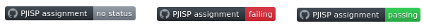
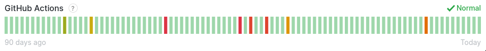

Upotreba GitHub akcija za automatizaciju izrade i ocenjivanja studentskih zadataka
Jelena Dokić
09/10.2020
Motivacija
- Zašto GitHub akcije?
- Kako se automatizuju izrada i ocenjivanje studentskih zadataka?
GitHub akcije
- tok posla (workflow)
- reagovanje na događaje (create, delete, fork, push, pull_request, release)
- poslovi (jobs)
- koraci (steps)
- kontekst okruženja (github, env, job, steps, runner, secrets)
- Docker i JS akcije
- pokretač (runner)
- prodavnica (marketplace)
Od čega se projekat sastoji?
- pjisp-template-name
- pjisp-diff
- poetry-publish
- smoke-test
- pjisp-assignment-template
pjisp-assignment-template
- šablonski repozitorijum
- služi za kreiranje i ocenjivanje studentskih zadataka
pjisp-template-name
- Python konzolna aplikacija otvorenog koda
- proverava ispravnost naziva repozitorijuma
- pjisp-{SCHOOL_YEAR}-{COURSE_ID}-{TEST_ID}-{GROUP_ID}
pjisp-diff
- Python konzolna aplikacija otvorenog koda
- proverava da li su promenjene sve datoteke koje je potrebno menjati
- proverava da li su nepromenjene sve datoteke koje se ne smeju menjati
pjisp-diff
Datoteke koje je uvek potrebno menjati:
- assignment_solution.c
- assignment.rst
Datoteka koju nije dozvoljeno menjati:
pjisp-diff
Datoteka koju je potrebno menjati kada se kreira zadatak za T12:
- fixtures/stdionumbers.yaml
Datoteke koje je potrebno menjati kada se kreira zadatak za T34 ili SOV:
- fixtures/file-error-input-not-readable.yaml
- fixtures/file-error-output-not-writable.yaml
- fixtures/file-text.yaml
poetry-publish
- GitHub akcija koja pri svakom novom objavljivanju verzije alata na GitHubu, kreira i novu verziju Python paketa i postavlja je na PyPI repozitorijum
poetry-publish
Paramtri koje ova akcija očekuje su
- python_version
- poetry_version
- pypi_token
- repository_name
- repository_url
poetry-publish
- u pjisp-template-name i pjisp-diff
name: Python package
on:
push:
tags:- 'v*.*.*'
jobs:
build:
runs-on: ubuntu-latest
steps:
- uses: actions/checkout@v2
- name: Change version in pyproject.toml
run: |
REF=$(echo ${{ github.ref }} | sed "s#\(refs/tags/\)\?v\?##")
sed -i "s/^version=\".\+\"/version=\"$REF\"/" pyproject.toml
- name: Build and publish to pypi
uses: JRubics/poetry-publish@v1.1
with:
pypi_token: ${{ secrets.PYPI_TOKEN }}
smoke_test
- konzolna aplikacija i API koji služi za testiranje studentskih zadataka
- izlazni kod kada dođe do greške
pjisp-assignment-template
Nove funkcionalnosti:
- assignment-diff - za proveru da li su izmenjene sve datoteke koje je potrebno menjati i da lisu ostale iste sve datoteke koje se ne smeju menjati
- assignment-check - za proveru izmena datoteka i proveru ispravnosti primera rešenja
- get-template - za pronalaženje naziva testa na osnovu naziva repozitorijuma i proveru ispravnosti naziva repozitorijuma
pjisp-assignment-template
Izmene postojećih funkcionalnosti:
- init - dodatno, nakon generisanja datoteka na osnovu izabranog identifikatora testa, kreira se .template datoteka u koju se smešta identifikator za kasniju upotrebu
- test-solution - dodato je da pre pokretanja funkcionalnosti zahteva da postoji assignment_solution.c datoteka
- assignment-build - dodato je da pre pokretanja funkcionalnosti zahteva da postoji assignment_solution.c datoteka
- assignment-pack - dodato je da se pre pakovanja, pored provere ispravnosti primera rešenja, proveri da li su izmenjene sve datoteke koje je potrebno menjati i da li su ostale iste svedatoteke koje se ne smeju menjati
pjisp-assignment-template
Dodate zavisnosti u projektu upotrebom Pipenv-a:
- pjisp-template-name - poziva ga get-template funkcionalnost sa nazivom repozitorijuma kao ulaznim parametrom i identifikatorom testa kao povratnom vrednošću
- pjisp-diff - poziva ga assignment-diff funkcionalnost sa identifikatorom testa kao ulaznim parametrom
pjisp-assignment-template
GitHub akcije:
- Project create
- PJISP assignment
Project create
- postavlja inicijalno stanje projekta
- na osnovu identifikatora testa kreiraj datoteke namenjene tom testu
- kreira bedž u README.rst datoteci
Project create
- jedan posao koji se sastoji od šest koraka
- pokreće se na Ubuntu operativnom sistemu na “create” događaj
Project create koraci 1, 2, 3
- uses: actions/checkout@v2
- name: Set up Python 2.7
uses: actions/setup-python@v1
with:
python-version: 2.7
- name: Install pipenv
uses: dschep/install-pipenv-action@v1
Project create korak 4
- name: init_template
run: |
REPO=$(echo ${{github.repository}} | cut -d "/" -f 2)
pipenv install
TEMPLATE=$(pipenv run make get-template repo_name=$REPO)
pipenv run make init template=$TEMPLATE
Project create korak 5
- name: add_badge
run: |
REPO=${{github.repository}}echo "|Actions Status|
.. |Actions Status| \image:: \
https://github.com/ \
$REPO/workflows/PJISP%20assignment/badge.svg
:alt: CPython build status on GitHub Actions
:target: https://github.com/$REPO/actions
" | cat - README.rst > README
mv README README.rst

Project create korak 6
- name: push_changes
run: |
git config --global user.email "action@github.com"
git config --global user.name "github"
git add .
git commit -m "Init template"
git push
Project create završetak
- po izvršavanju celog ovog toka poslova, repozitorijum je spreman za preuzimanje i kreiranje studentskog zadatka
- bedž u početku ima “failing” vrednost, pošto zadatak nije spreman za studente i očekuje se od nastavnog osoblja da ga kreira
PJISP assignment
- nakon izmene koda na repozitorijumu proveri da li je repozitorijum spreman za pregledanje od strane nastavnika i davanje studentima na rad
- proverava ispravnost primera rešenja
- menja status bedž-a
PJISP assignment
- jedan posao koji se sastoji od četiri koraka
- pokreće se na Ubuntu operativnom sistemu na “push” ili “pull-request” događaj
PJISP assignment koraci 1, 2, 3
- uses: actions/checkout@v2
- name: Set up Python 2.7
if: ${{!contains(github.repository,'pjisp-assignment-template')}}
uses: actions/setup-python@v1
with:
python-version: 2.7
- name: Install pipenv
if: ${{!contains(github.repository,'pjisp-assignment-template')}}
uses: dschep/install-pipenv-action@v1
PJISP assignment korak 4
- name: Run test
if: ${{!contains(github.repository,'pjisp-assignment-template')}}
run: |
pipenv install
pipenv run make assignment-check
PJISP assignment završetak
- menja status bedža na osnovu uspešnosti izvršavanja testova
zaključci
- akcije nisu u potpunosti pouzdane 
- dokumentacija nije uvek usklađena sa alatom
- jednostavna upotreba